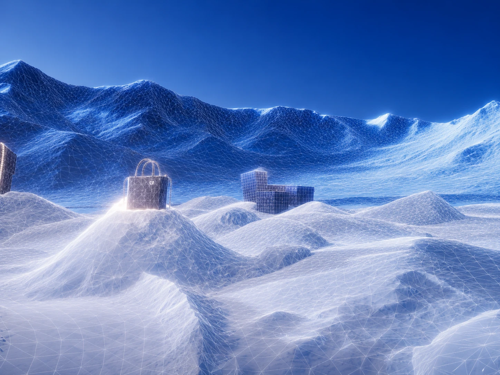
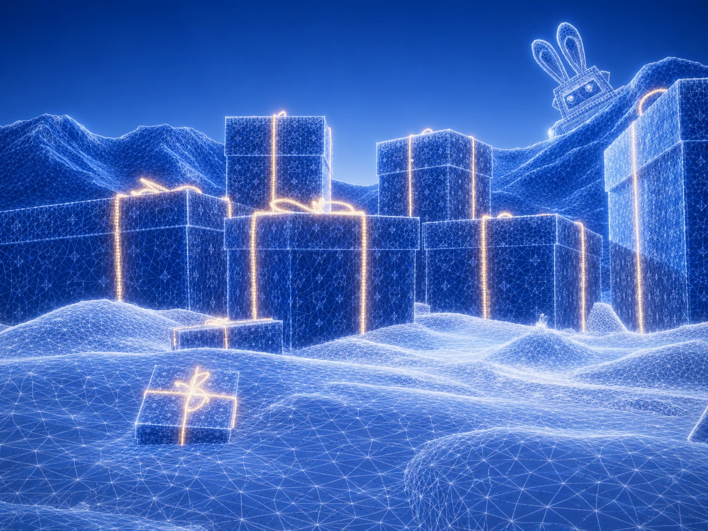

Création de tout l’environnement
Nous avons conçu l’atmosphère complète de cette scène : direction artistique, ambiance lumineuse, cadrage et intégration HDR pour créer une immersion immédiate dès l’arrivée.

Création des produits en 3D
Les produits sont modélisés, texturés et mis en scène en trois dimensions afin de révéler les volumes, les matières et les détails avec un rendu réaliste et immersif.
